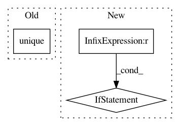

c8b28432a637a780eed96547260722ff3dede57e,niftynet/engine/sampler_selective.py,,create_label_size_map,#Any#Any#,140
Before Change
:return: count_data
"""
data = np.round(data)
labels = np.unique(data)
print("Labels are ", labels)
binary_seg = np.copy(data)
binary_seg = np.where(binary_seg == value, np.ones_like(data),
np.zeros_like(data))
After Change
unique, count = np.unique(labelled_data, return_counts=True)
count_data = np.copy(labelled_data)
for label, size in zip(unique, count):
if label == 0:
continue
count_data = np.where(labelled_data == label,
np.ones_like(data) * size,
count_data)
return count_data
In pattern: SUPERPATTERN
Frequency: 3
Non-data size: 3
Instances
Project Name: NifTK/NiftyNet
Commit Name: c8b28432a637a780eed96547260722ff3dede57e
Time: 2017-10-04
Author: wenqi.li@ucl.ac.uk
File Name: niftynet/engine/sampler_selective.py
Class Name:
Method Name: create_label_size_map
Project Name: NifTK/NiftyNet
Commit Name: baecce5a6fbe4576ca8348a93dc56f07e7ba84f6
Time: 2019-06-05
Author: ucabtmv@ucl.ac.uk
File Name: niftynet/contrib/csv_reader/csv_reader.py
Class Name: CSVReader
Method Name: _parse_csv
Project Name: keras-team/keras
Commit Name: be24159959672c32abb31697e721d96ae6ffaf97
Time: 2016-02-27
Author: ipod825@gmail.com
File Name: keras/wrappers/scikit_learn.py
Class Name: BaseWrapper
Method Name: fit